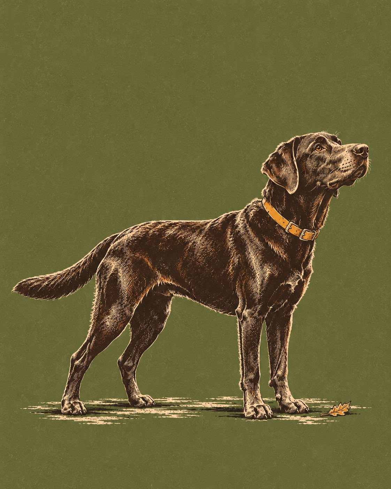

Tuesday's ChoiceFor the weekend of Sat 17 – Sun 18 October
Hanging Rock, at Rupert’s Pace
A 3.6-mile round trip from the visitor-center lot to the quartzite outcrop, with a wooded climb, stairs and room to turn back before the top.
· Weekend choice 1 of 2

Why This Week
Make this a deliberate day trip, not a quick local walk. The current NWS weekend forecast is sunny and cool. Aim for a dry morning, take the orange-circle trail at Rupert’s pace, and treat the view as optional: a comfortable dog matters more than reaching the rock. Allow roughly 2¼–2½ hours each way from the public Chapel Hill reference; this is a routing estimate without traffic, so leave time for the journey.
Conditions
Saturday: Sunny, with a high near 57. Sunday: Sunny, with a high near 57. Saturday night: Clear, with a low around 38. Sunday night: Clear, with a low around 40.
If it turns
Thunder, rain, ice, dangerous wind, official closure or a tired dog: Postpone or turn back before the upper stairs. Another exposed outdoor route is not a thunderstorm fallback. Check official park status and NWS again before leaving.
Forecast snapshot · issued Tue 13 Oct, 15:00 ET · National Weather Service
For Rupert
Carry water and take breaks on the wooded approach. The full route has wood and stone stairs; turn around early if his pace or footing changes. Keep him on an attended leash no longer than six feet.
At the Rock
Stay at least one body length back from cliff edges and avoid unstable edge rocks. Wet rock, thunder, ice or unsafe wind means postpone. The swim beach is closed for the season and is not a dog stop.
If Plans Change
- CloserA shorter Riverwalk from Gold Park20–30 min drive
- Bigger dayRock Garden and a quiet park picnic0.2 mi · 2 h 15 – 2 h 30 drive · day trip
- AlternativeUpper Cascades from the observation deck0.4 mi · 2 h 15 – 2 h 30 drive
Memory Prompt
What catches Rupert’s nose before the stairs? Remember the moment from a safe, level stopping place.
Sources
- NC State Parks — Hanging Rock access, current status, hours and pet rules retrieved 2026-10-13
- NC State Parks — official trail lengths, trailheads and cliff safety retrieved 2026-10-13
- NC State Parks — park trail map retrieved 2026-10-13
- National Weather Service — public visitor-center point forecast retrieved 2026-10-13
- Town of Hillsborough — Riverwalk access for the local contingency retrieved 2026-10-13
- Town of Hillsborough — Gold Park and dog rules retrieved 2026-10-13
Place details as recorded Tue 13 Oct. They stay as published even if the place's record is corrected later.